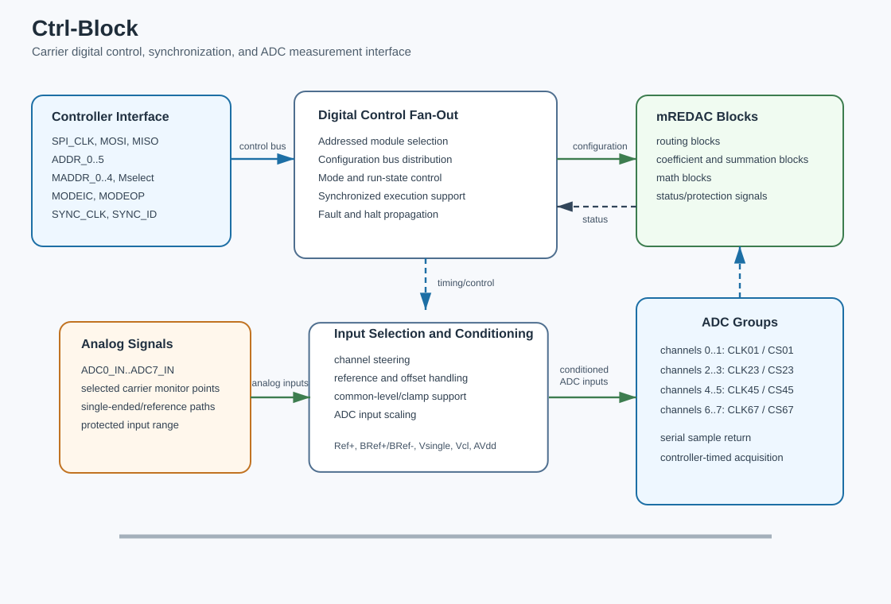

Ctrl-Block¶
The Ctrl-Block is the main configuration, control, and measurement block of an mREDAC carrier. It provides the digital control plane for carrier configuration and the measurement path for digitizing selected analog monitor voltages.
In the hardware hierarchy, the Ctrl-Block is not part of the analog computation lane chain in the same way as the U-Block, C-Block, I-Block, T-Block, or M-Blocks. Instead, it surrounds those blocks with the control, timing, status, and readout infrastructure needed to configure and observe the mREDAC.
Hardware Role¶
The Ctrl-Block combines several functions that are normally separate in a software view of the system:
- Local controller execution for carrier configuration and run coordination.
- Digital control fan-out for configuration buses and module-selection signals.
- Measurement acquisition for analog monitor channels.
- Local support circuitry for references, offsets, supplies, and timing distribution.
- Physical integration of the local controller module used for carrier control.
The block therefore acts as the boundary between the external software controller and the analog carrier electronics. Configuration data moves from software into the carrier through the Ctrl-Block, while measured analog values move from the carrier back toward software through the ADC path.
The attached local controller module provides the carrier microcontroller function. It applies configuration commands to the mREDAC, acts as the source of the SPI clock and MOSI data stream used by the carrier control bus, receives returned or status data such as MISO, and coordinates execution-related control and status lines such as mode selection, synchronization, external halt, and overload reporting.
Digital Control Interface¶
The digital side exposes the main carrier-control signals:
- SPI signals:
SPI_CLK,MOSI, andMISO. - Module and device selection signals:
Mselect,ADDR_0..ADDR_5, andMADDR_0..MADDR_4. - Operating-mode signals:
MODEICandMODEOP. - Synchronization signals:
SYNC_CLKandSYNC_ID. - Runtime and protection signals:
EXTHALTandOVERLOAD. - General-purpose digital I/O lines for auxiliary functions.
These signals allow the controller to address carrier resources, configure programmable blocks, coordinate execution phases, and observe fault or overload conditions. The Ctrl-Block is therefore responsible for reliable control-plane transport rather than analog computation.
Connection to the mREDAC Carrier¶
On the mREDAC carrier, the Ctrl-Block connects to both the global digital control infrastructure and the cluster-local measurement outputs.
The configuration connection is shared with the module and cluster electronics:
SPI_CLK,MOSI, andMISOform the serial configuration bus.- Address and module-address lines select which resource is being configured.
- Mode and synchronization lines coordinate initial-condition, operation, halt, and synchronized run behavior.
- Protection/status lines report events such as overload or external halt.
The measurement connection receives analog monitor signals from the carrier SPI bus. Cluster-local monitor outputs are exposed as CL_ADC0..CL_ADC7 and connect into the carrier ADC measurement bus ADC_BUS0..ADC_BUS7, which interfaces with the ADC readout circuitry.
Which signals reach the ADC buses is decided by an ADC switching matrix on the carrier, one per cluster. Its inputs are labeled ADC0..ADC15 and are the 16 M-Block outputs of that cluster. Its outputs are the eight ADC_BUS0..ADC_BUS7 lines. The matrix is programmed through the lines ADC_MOSI, ADC_MISO, ADC_CLK, ADC_CS, ADC_Reset, ADC_Prog, and ADC_Strobe. These labels therefore describe 16 selectable sources per cluster, not 16 ADC channels. This makes the Ctrl-Block the bridge between analog monitor points on the mREDAC and digital samples returned to software.
ADC Measurement Path¶
The Ctrl-Block includes an ADC measurement path for reading analog computation voltages. At the carrier interface, cluster monitor signals are collected on the ADC_BUS0..ADC_BUS7 bus. Inside the ADC readout path, these signals are mapped into the ADC channel interface used for conversion and streaming.
The local converter section contains eight ADC channels, one per ADC_BUS line:
- All eight converters share one conversion-start/chip-select signal and one clock.
- The schematic nets
ADC_CLK01/23/45/67andADC_CS01/23/45/67are buffered copies of that single clock and chip-select. They are not independent timing groups. - All eight channels therefore convert on the same edge and are sampled simultaneously.
- Each converter returns its result on its own serial data line, and the controller reads all eight in parallel.
The ADC resolution is 14 bit over a full-scale range of ±1.25, which gives a step size of about 1.5e-4.
An mREDAC therefore has eight ADC channels. At most eight probes can be configured per carrier; a configuration with more channels is rejected.
Input Selection and Conditioning¶
Before conversion, analog inputs pass through selection and conditioning circuitry. The input-selection stage can steer cluster monitor channels and reference-related signals into the converter inputs. The conditioning stage sets the signal into the range expected by the ADC and provides the required common-mode or offset behavior.
The relevant analog support signals include:
Ref+: positive reference source for measurement scaling.BRef+andBRef-: buffered positive and negative reference rails.Vsingle: single-ended measurement reference path.Vcl: clamp or common-level reference used by the input network.AVdd: analog supply rail for the measurement path.
This support network separates analog measurement accuracy from the raw digital interface. The controller receives digital samples, but the sample quality depends on stable reference generation, correct input scaling, and controlled analog common-mode behavior inside the Ctrl-Block.

Signal Flow¶
A typical configuration flow is:
- The controller drives the SPI bus and address lines.
- The Ctrl-Block distributes the selected clock, data, and module-selection signals.
- The addressed carrier resource receives the configuration data.
- Mode and synchronization lines determine whether the carrier is in setup, initial-condition, operation, halt, or synchronized execution behavior.
A typical measurement flow is:
- A cluster exposes an analog monitor signal on one of
CL_ADC0..CL_ADC7. - The cluster's ADC switching matrix routes that monitor signal onto one of the
ADC_BUS0..ADC_BUS7measurement buses. - The input-selection network connects the selected monitor path into the measurement front end.
- The conditioning network applies the appropriate reference, offset, and input scaling.
- All eight ADC channels receive the shared clock and chip-select and convert simultaneously.
- The digitized sample is shifted back through the serial data path.
- The controller associates the sample with the selected ADC channel and execution state.
A typical synchronization flow is:
- The controller distributes a synchronization clock or identifier.
- The Ctrl-Block forwards the synchronization signals to the carrier interface.
- Carrier resources use the synchronization state to align configuration, acquisition, or run-phase transitions.
Relationship to Other Blocks¶
The Ctrl-Block controls and observes the carrier-level environment rather than processing analog computation lanes directly:
- The U-Block, C-Block, I-Block, and T-Block define analog signal routing and weighting inside the computation fabric.
- The M-Blocks implement mathematical elements that produce and consume analog values.
- The Ctrl-Block provides the digital configuration and measurement path needed to program, monitor, and coordinate those resources.
- The ADC measurement path can observe selected analog monitor points, but it does not participate in the continuous-time analog computation path.
This separation is important: analog computation remains in the cluster and routing blocks, while command, state, measurement, and synchronization responsibilities are handled by the Ctrl-Block.
Programming with pybrid¶
User code interacts with the Ctrl-Block indirectly through carrier, controller, session, run, and DAQ objects. pybrid does not currently expose a standalone ctrlblock entity comparable to cluster.ublock, cluster.cblock, or cluster.iblock.
At the carrier model level, ADC readout is configured through carrier.adc_config:
from pybrid.redac.carrier import ADCChannel
carrier.adc_config.append(
ADCChannel(index=source_index, gain=1.0, offset=0.0, probe=probe_index)
)
The fields have the following meaning:
index: the source M-output lane or signal index selected for ADC conversion.gain: software-side gain applied to the returned ADC value.offset: software-side offset added to the returned ADC value.probe: user-facing probe index used to associate returned samples with a requested signal.
On REDAC-level models, carrier.adc_config is a list that may contain ADCChannel entries and None free-slot placeholders. The REDAC computer.daq.capture(...) helper appends ADCChannel entries. Higher-level LUCIDAC/lucipy code may instead preallocate eight slots and place an ADCChannel at the desired ADC channel index.
When the source is an M-Block element, pybrid can resolve its ADC source index with the carrier signal resolver. The index calculation follows the carrier's M-output layout:
The convenience helper on the REDAC computer is available through computer.daq.capture(...). It uses this mapping when an entity is passed for ADC observation:
Each captured entity is assigned the next available probe index internally.
For manually configured DAQ, the typical sequence is:
from pybrid.redac import Controller, RunConfig, DAQConfig
async with Controller() as controller:
await controller.add_device(host, port)
# Select an ADC source before serializing the computer configuration.
controller.computer.daq.capture(entity, gain=1.0, offset=0.0)
runs = await (
controller.create_session()
.set_config(controller.computer)
.run(
RunConfig(ic_time=100_000, op_time=2_000_000),
daq=DAQConfig(num_channels=1, sample_rate=10_000),
)
.execute()
)
DAQConfig(num_channels=...) defines how many sampled channels are expected in the run data stream. The ADC source selection itself must already be present in the computer configuration, either through computer.daq.capture(...) or by adding ADCChannel entries to carrier.adc_config before .set_config(controller.computer).
The run command sends timing, synchronization, overload-halt behavior, and DAQ parameters to the connected carrier. RunConfig controls execution timing and selected halt behavior:
ic_time: initial-condition duration in nanoseconds.op_time: operation duration in nanoseconds.halt_on_overload: enables halt behavior when overload is reported.halt_on_external_trigger: present on the PythonRunConfigdataclass, but not currently serialized by the REDAC session run path; do not rely on it unless backend support is added or verified for the target firmware.
DAQConfig controls sample acquisition:
num_channels: number of ADC channels expected in the sampled data stream.sample_rate: sample rate in samples per second.sample_op: whether to collect regular OP samples; pybrid assembles these intorun.data, indexed by probe index.sample_op_end: whether to request OP_END or final-value acquisition; pybrid assembles these intorun.final_values.
Typical pybrid operations that depend on the Ctrl-Block control plane include:
- discovering or attaching to a carrier device;
- applying a serialized hardware configuration;
- starting, stopping, or resetting a run;
- synchronizing device state;
- reading acquisition or status information from the connected hardware.
Conceptually, the Ctrl-Block is below these high-level operations. The Python API describes the desired computer configuration, ADC observation points, run timing, synchronization, and DAQ behavior. The controller backend then uses the hardware control and measurement interface to apply that state to the carrier and decode returned samples.
Configuration Model¶
The Ctrl-Block does not expose a lane-indexed model like the U-Block, C-Block, or I-Block. Its configuration is organized around carrier-level control functions:
- address and module-selection state;
- SPI clock, input, and output data movement;
- operation-mode selection;
- synchronization state;
- ADC source selection, conversion timing, sample streaming, and final-value readout;
- status and protection signaling.
This model matches its role as a carrier control interface. It is a coordination and acquisition block, not an analog crossbar, coefficient block, current summation matrix, or mathematical function block.